阿樂沒看懂
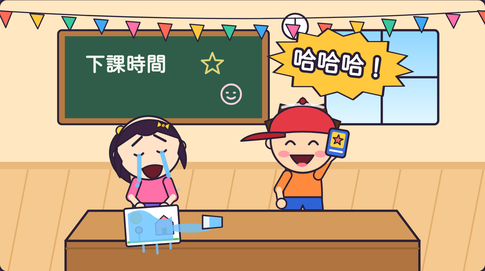
阿樂大笑：
「小安快看！」
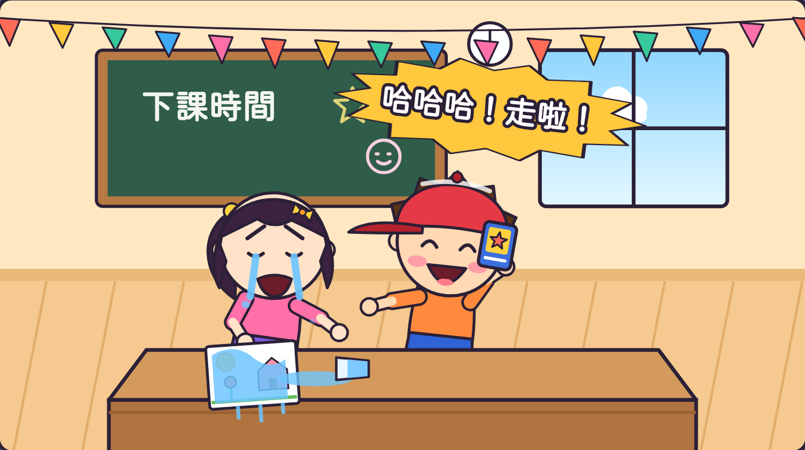
阿樂硬拉小安：
「走啦走啦！」
虎尾小劇場｜我是心情小偵探
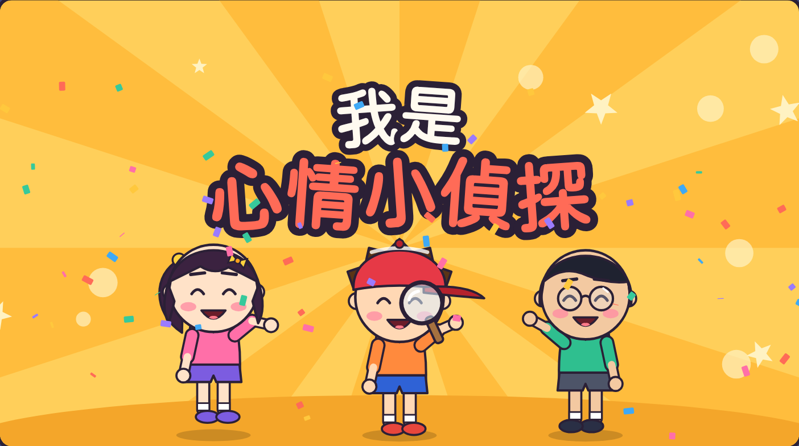
虎尾小劇場｜三年級資源班
1
從臉、身體、聲音找線索。
2
別人難過時，不大笑、不硬拉，輕聲關心。
虎尾小劇場｜我是心情小偵探
想一想
看到他在哭
他都不說話
他的頭低低的
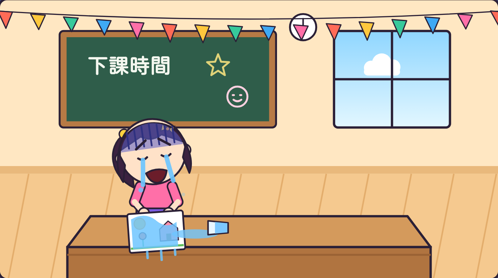
虎尾小劇場｜我是心情小偵探

阿樂大笑：
「小安快看！」

阿樂硬拉小安：
「走啦走啦！」
虎尾小劇場｜我是心情小偵探
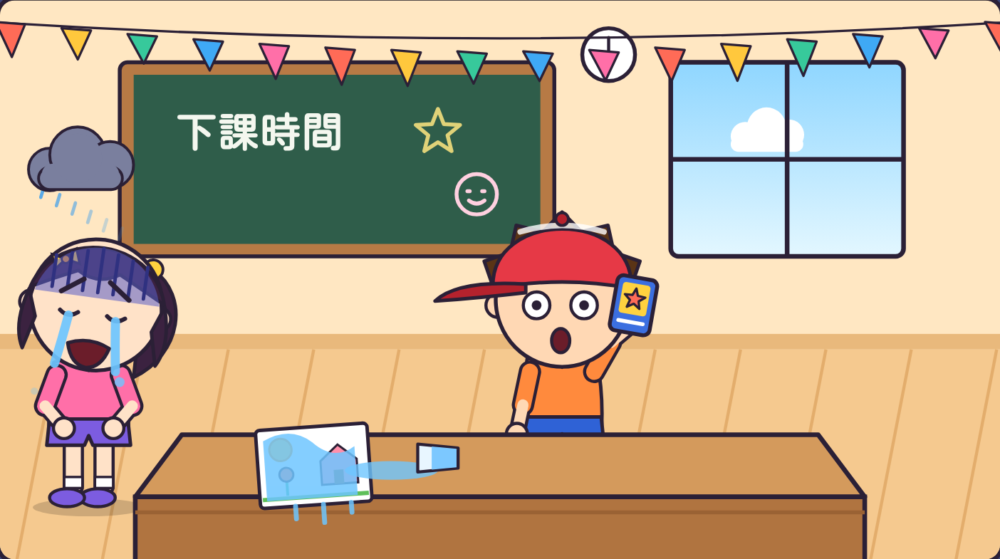
小安哭得更大聲，
走到旁邊去了。
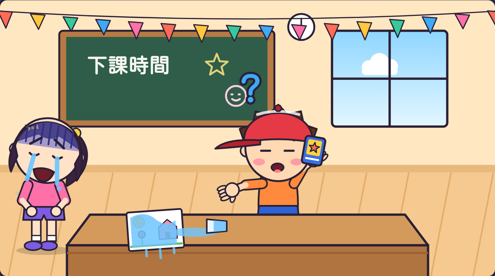
阿樂不知道
小安為什麼哭。
虎尾小劇場｜我是心情小偵探
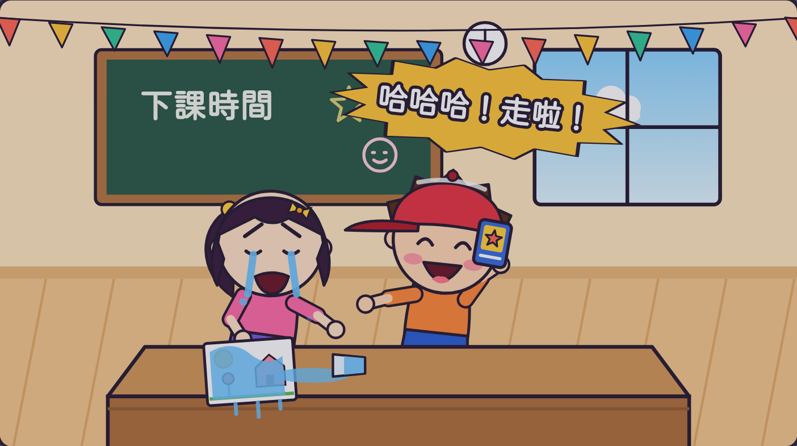
倒帶回去看
阿樂
哪裡做得不好？
有 3 個地方喔！
你找到幾個？
虎尾小劇場｜我是心情小偵探
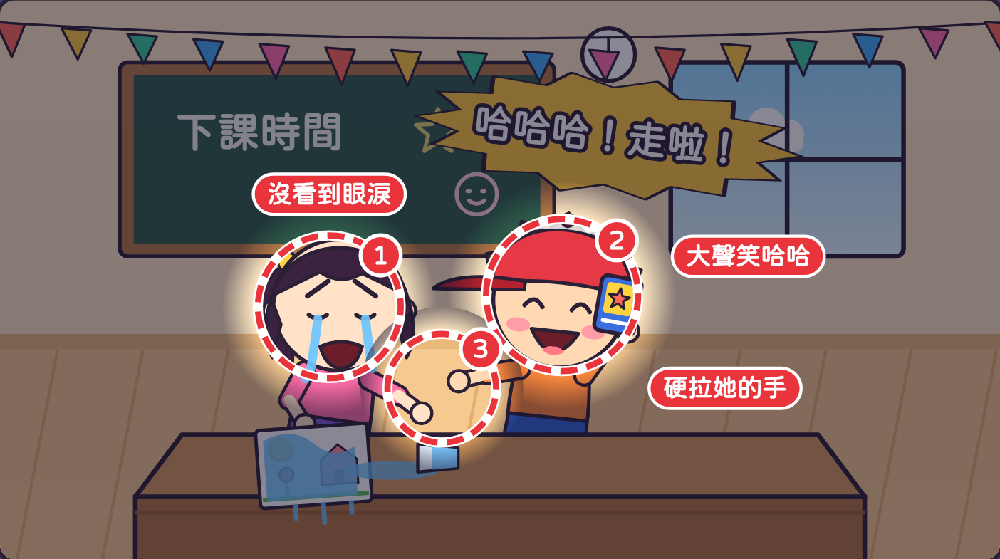
① 沒看到眼淚
② 大聲笑哈哈
③ 硬拉她的手
接下來學學看，
怎麼看懂心情！
虎尾小劇場｜我是心情小偵探
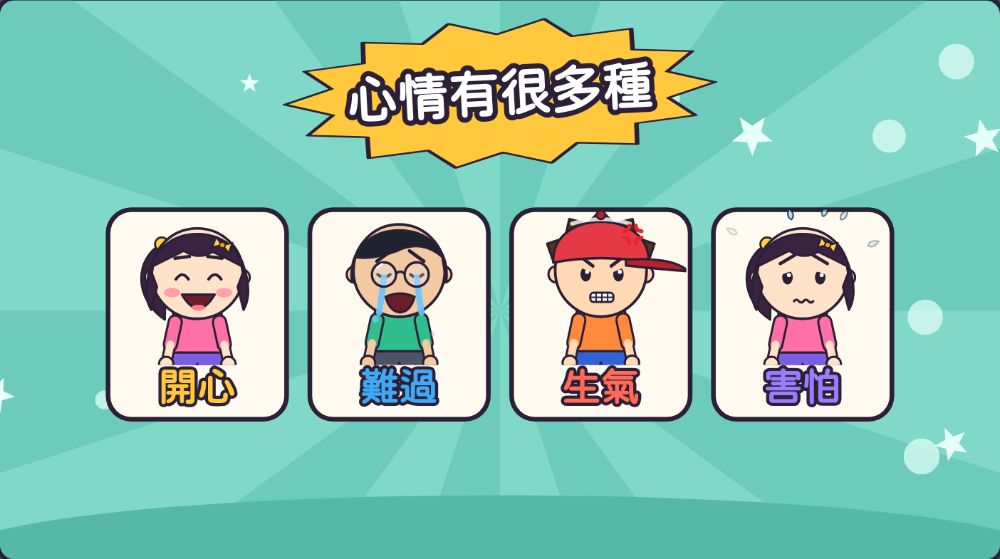
做做看這四張臉！
虎尾小劇場｜我是心情小偵探
1
眼睛、眉毛、嘴巴
2
頭、手、身體
3
大聲？小聲？
4
發生什麼事？
第 1 步
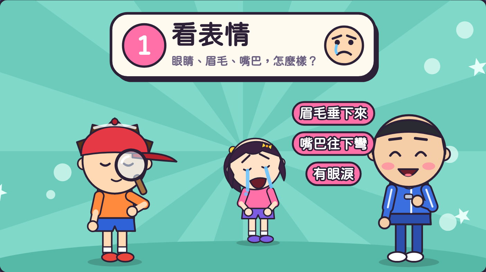
手像拿放大鏡，
看看對方的臉。
眼睛、眉毛、嘴巴，
怎麼樣？
一起看一看！
虎尾小劇場｜我是心情小偵探
第 2 步
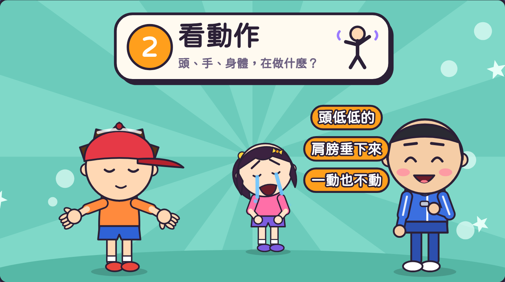
兩手張開，
看看整個身體。
你看到什麼？
虎尾小劇場｜我是心情小偵探
第 3 步
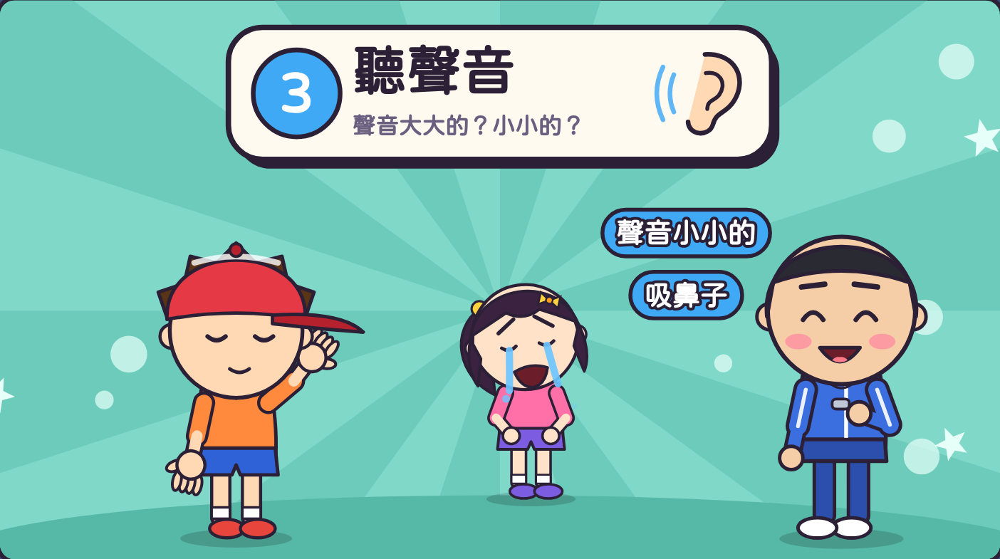
手放耳朵旁，
仔細聽。
聽聽看！
虎尾小劇場｜我是心情小偵探
第 4 步
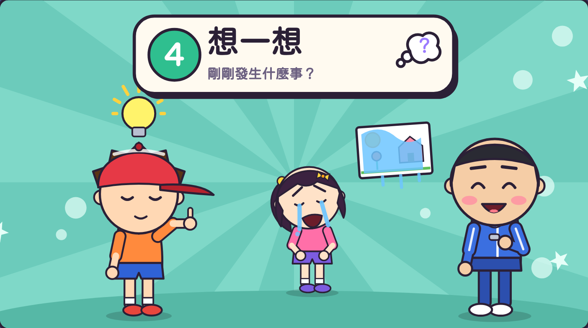
手指向上，
想一想。
剛剛發生什麼事？
他可能覺得⋯
換你猜猜看！
虎尾小劇場｜我是心情小偵探
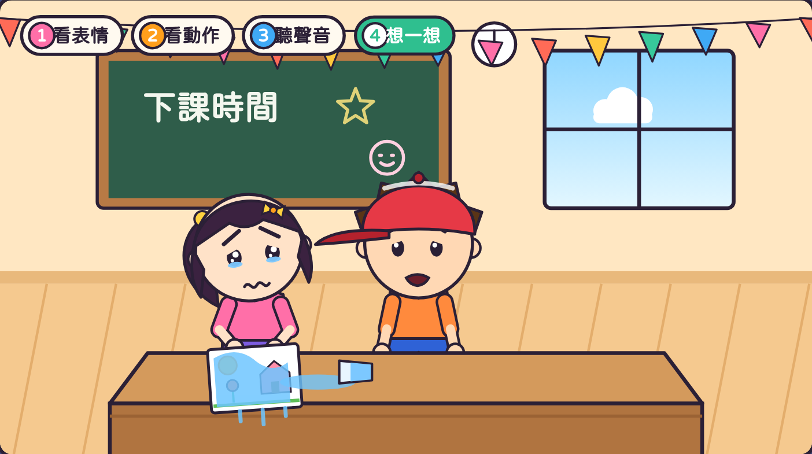
阿樂輕聲問：
「你還好嗎？」
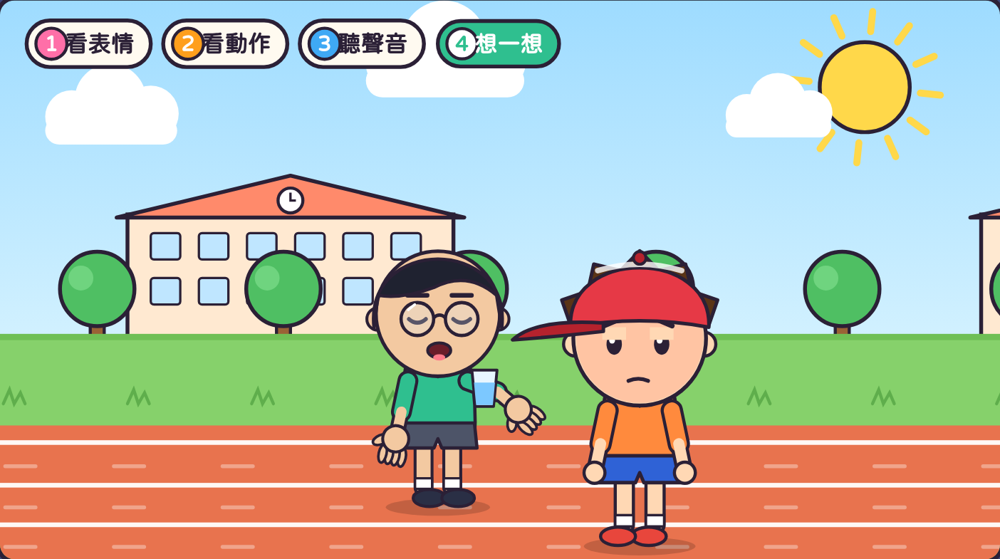
阿凱看出阿樂生氣，
陪他喝口水。
虎尾小劇場｜我是心情小偵探
老師抽一張情境卡，一人演心情，其他人當偵探猜一猜。
情境 1
情境 2
情境 3
虎尾小劇場｜我是心情小偵探
一起念口訣
看表情，看動作，
聽聲音，想一想，
線索找一找，
心情猜得到！
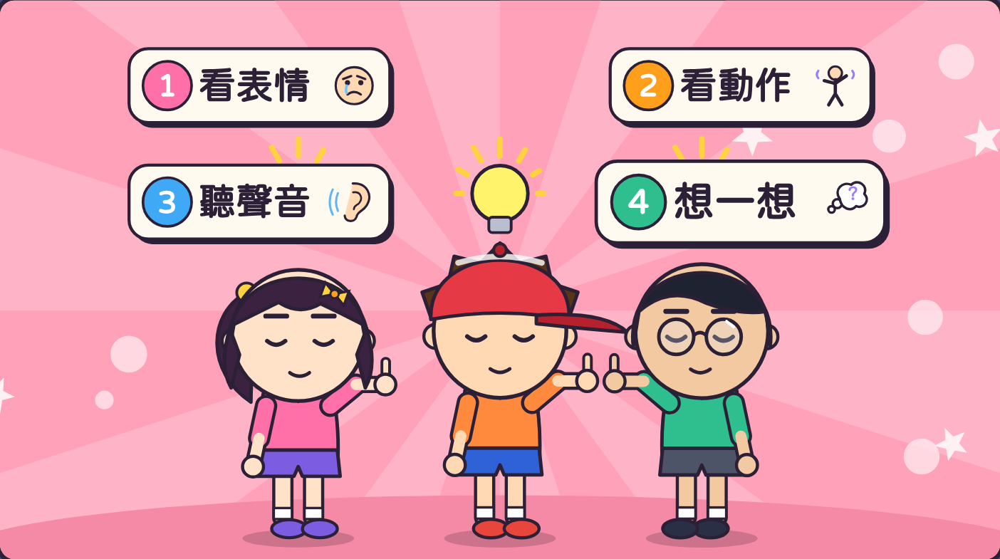
打開「心情偵探挑戰題」，
回答 9 個問題。
9 題
虎尾小劇場｜我是心情小偵探